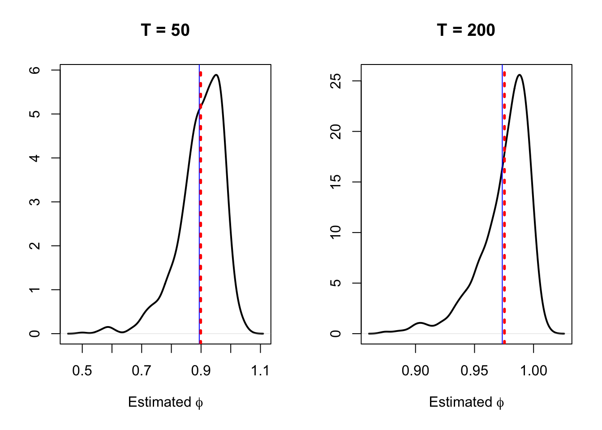
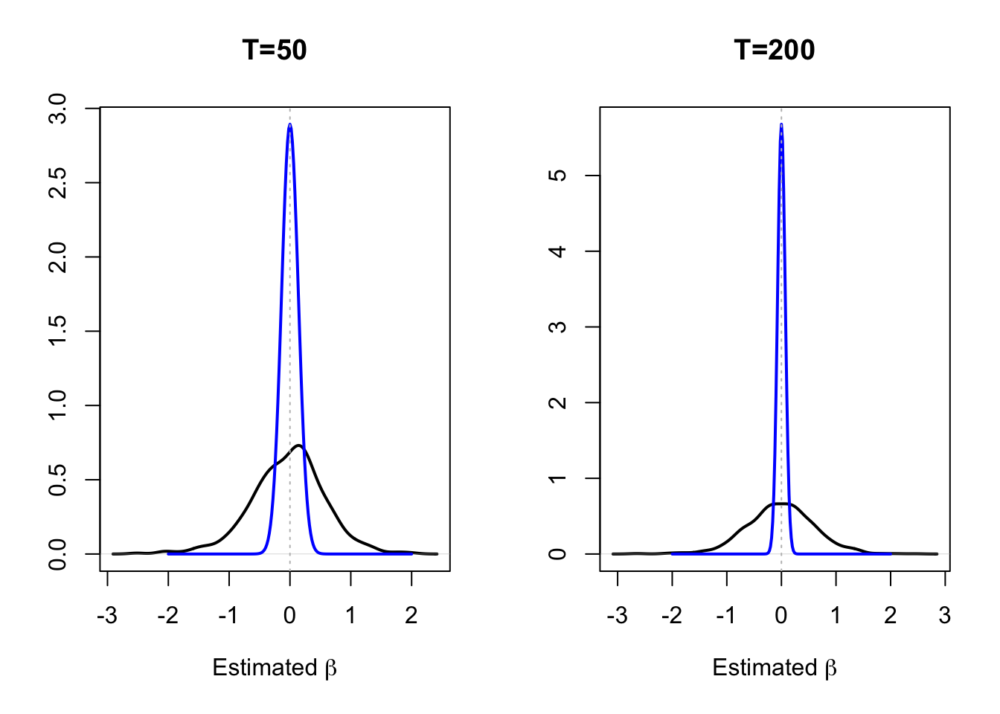
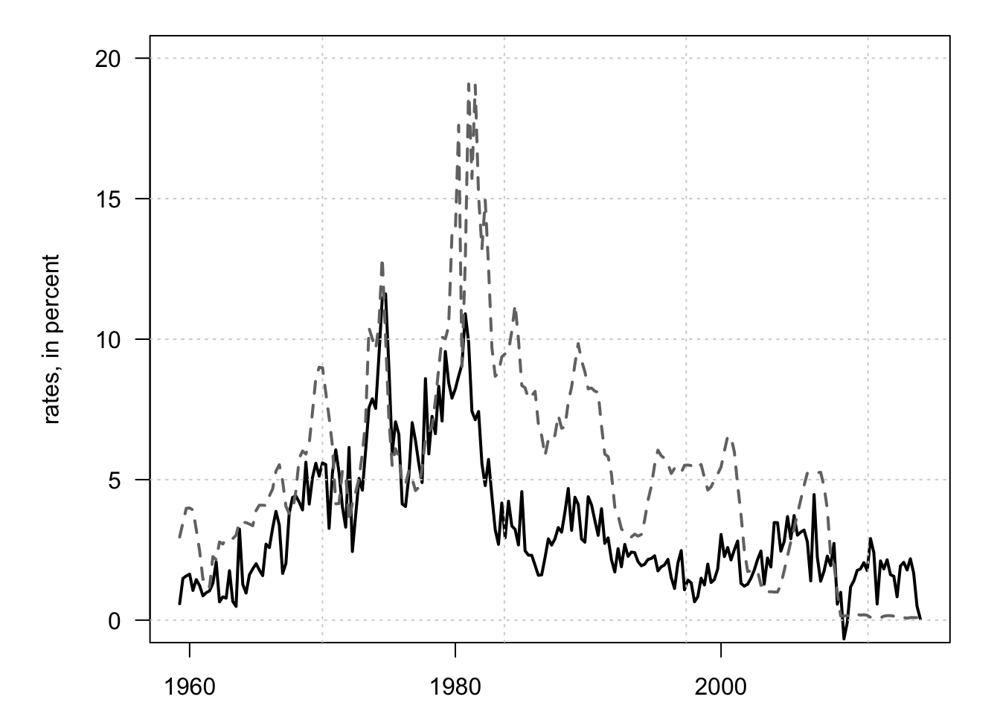

Chapter 5 Non-stationary processes
In time series analysis, nonstationarity has several crucial implications. Indeed, various time-series regression procedures are not reliable anymore when processes are nonstationary.
There are different reasons why a process can be nonstationary. Two examples are trends and breaks. Generally speaking, a trend is a persistent long-term movement of a variable over time. A linear trend is a simple example of (deterministic) trend. We say that process \(y_t\) is stationary around a linear trend if it is given by: \[ y_t = a + bt + x_t, \] where \(x_t\) is a stationary process. But “trends” may also be stochastic. A typical example of stochastic trend is a random walk: \[ w_t = w_{t-1} + \varepsilon_t, \] where \(\varepsilon_t\) is a sequence of i.i.d. mean-zero shocks with variance \(\sigma^2\).
As we will see, if \(y_t = w_t + x_t\), where \(w_t\) is a random walk, then the use of \(y_t\) in econometric specifications will have to be operated carefully. Typically, as we shall see, standard inference in linear regression models may no longer be valid since \(y_t\) features no unconditional moments.
We have \[ \mathbb{V}ar_t(y_{t+h})=\mathbb{V}ar_t(\varepsilon_{t+h})+\dots+\mathbb{V}ar_t(\varepsilon_{t+1})=h\sigma^2. \] Using the law of total variance (and assuming that \(\mathbb{V}ar(y_t)\) exists), we have, for any \(h\): \[\begin{equation} \mathbb{V}ar(y_t) = \mathbb{E}[\mathbb{V}ar_{t-h}(y_{t})]+\mathbb{V}ar[\mathbb{E}_{t-h}(y_{t})].\tag{5.1} \end{equation}\] We also have \(\mathbb{E}_{t-h}(y_t)=y_{t-h}\) and \(\mathbb{V}ar_t(y_{t+h})=\mathbb{V}ar_t(\varepsilon_{t+h})+\dots+\mathbb{V}ar_t(\varepsilon_{t+1})=h\sigma^2\). Therefore, Eq. (5.1) gives: \[ \mathbb{V}ar(y_t) = h\sigma^2 + \mathbb{V}ar(y_{t-h}). \] Since the previous equation needs to be satisfied for any \(h\) (even infintely large ones), and since \(\mathbb{V}ar(y_{t-h})>0\), \(\mathbb{V}ar(y_t)\) can not be finite. None of the population moments of a random walk is actually defined.
5.1 Issues when working with nonstationary time series
Let us discuss three issues associated with nonstationary processes: 1. Bias of autoregressive coefficient towards 0 (context: autoregressions). 2. Even in large samples, the \(t\)-statistics cannot be approximated by the normal distribution (context: OLS regressions). 3. Spurious regressions: OLS-based regression analysis tends to indicate relationships between independent nonstationary (or unit-root) series.
5.1.1 The bias of autoregressive coefficient towards zero
Consider a non-stationary \(y_t\) process (e.g., \(y_t\) follows a random walk). The estimate of \(\phi\) in the (OLS) regression \(y_t = c + \phi y_{t-1} + \varepsilon_t\) is then biased toward zero. In particular, we have the approximation \(\mathbb{E}(\phi)=1-5.3/T\), where \(T\) is the sample size (see, e.g., Abadir (1993)). The 5th percentile of the distribution of \(\phi\) is approximately \(1 - 14.1/T\), e.g., 0.824 for \(T=80\). This notably poses problems for forecasts. Indeed, while we have \(\mathbb{E}_t(y_{t+h})=y_t\) if \(y_t\) follows a random walk, someone who would fit an AR(1) process and would obtain for instance \(\hat\phi=0.824\) would obtain that \(\mathbb{E}_t(y_{t+10})=0.144y_t\).
This is illustrated by Figure 5.1. This figure shows, in black, the distributions of \(\hat\phi\), obtained by OLS in the context of the linear model \(y_t = c + \phi y_{t-1} + \varepsilon_t\). These distributions are obtained by simulations. We consider two sample sizes (\(T=50\), left plot, and \(T=200\), right plot). The vertical red bars indicate the means of the distributions, the vertical blue bar gives the approximated mean given by \(1-5.3/T\).

Figure 5.1: The densities of based on 1000 simulations of samples of length \(T\), they are approximated by the kernel approach.
5.1.2 Spurious regressions
Consider two independent non-stationary (unit roots) variables. If we regress one on the other, and if we use the standard OLS formulas to compute the standard deviation of the regression parameter, it can be shown that we will tend to underestimate this standard deviation. As a result, if we use standard \(t\)-statistics to test for the existence of a relationship between the two variables, we will often have false positive, i.e., we will often reject the null hypothesis of no relationship (\(H_0\): regression coefficient = 0). This phenomenon is called spurious regressions (see, e.g., these examples).
This situation is illustrated by Figure 5.2. We simulate two independent random walks, \(x_t\) and \(y_t\), and we regress \(y_t\) on \(x_t\) by OLS. (We consider two different sample sizes, \(T=50\) and \(T=200\).) The black lines represent the densities of the estimated \(\beta\)’s, that are the slope coefficients of the regressions. The blue density represent the asymptotic distribution of \(\beta\) based on to the standard OLS formula (normal distribution of mean zero and of variance \(\hat\sigma^2/\widehat{\mathbb{V}ar}(x_t)\)). The fact that the latter distribution features a smaller variance than the former implies that using the standard OLS inference is misleading, as this distribution overestimates the accuracy of the estimator.

Figure 5.2: The densities of based on 1000 simulations of samples of length \(T\), they are approximated by the kernel approach.
5.2 Nonstationarity tests
Hence, employing (OLS) regressions with non-stationary variables may be misleading. It is therefore important, before employing these techniques (OLS), to check that the variables are stationary. To do so, specific tests are used. These tests are called stationarity and non-stationarity (or unit-root) tests. In the context of a stationarity test, the null hypothesis that \(y_t\) is stationary or trend-stationary (i.e. equal to the sum of a linear trend and a stationary component). In the context of a non-stationarity (or unit root) tests, the null hypothesis that \(y_t\) is not (trend) stationary.
To illustrate, consider the AR(1) case: \[\begin{equation} y_t = \phi y_{t-1} + \varepsilon_t, \quad \varepsilon_t \sim \mathcal{N}(0,1).\tag{5.2} \end{equation}\]
If \(y_t\) is stationary (i.e. if \(|\phi|<1\), Prop. 2.3), it can be shown (Hamilton (1994), p.216) that: \[ \sqrt{T}(\phi^{OLS}-\phi) \overset{d}{\rightarrow} \mathcal{N}(0,1-\phi^2). \] The previous equation does not make sense for \(\phi=1\).
Even if standard OLS results are not valid any more in the non-stationary case, many (non)stationary tests make use of statistics that were used in the standard OLS analysis. Even if the \(t\)-statistic does not admit the Student-\(t\) distribution any more, one can still compute this statistic. The idea behind severeal unit-root tests is simply to determine the distribution of these OLS-based statistics under the null hypothesis of non-stationarity. Let us define \(H_0\) as follows: \[ H_0:\quad \phi = 1 \quad and \quad H_1: \quad |\phi| < 1. \]
Test statistic: \[ t_{\phi=1} = \frac{\phi^{OLS}-1}{\sigma^{OLS}_{\phi}}, \] where \(\phi^{OLS}\) is the OLS estimate of \(\phi\) and \(\sigma^{OLS}_{\phi}\) is the usual OLS-based standard error estimate of \(\phi^{OLS}\).
Importantly, it has to be noted that, under the null hypothesis, \(t_{\phi=1}\) is not distributed as a Student-t variable (see Def. 8.10).
Theorem 5.1 (Convergence results) If \(y_t\) follows Eq. (5.2) (with \(\mathbb{V}ar(\varepsilon_t)=\sigma^2\)) and \(\phi=1\), then: \[\begin{eqnarray} T^{-3/2} \sum_{t=1}^{T} y_{t} &\overset{d}{\rightarrow}& \sigma \int_{0}^{1}W(r)dr\\ T^{-2} \sum_{t=1}^{T} y_{t}^2 &\overset{d}{\rightarrow}& \sigma^2 \int_{0}^{1}W(r)^2dr\\ T^{-1} \sum_{t=1}^{T} y_{t-1}\varepsilon_{t} &\overset{d}{\rightarrow}& \sigma^2 \int_{0}^{1}W(r)dW(r), \end{eqnarray}\] where \(W(r)\) denotes a standard Brownian motion (Wiener process) defined on the unit interval.
Theorem 5.1 notably implies that, if \(\phi=1\), then: \[\begin{eqnarray} T(\phi^{OLS}-1) &\overset{d}{\rightarrow}& \frac{\int_{0}^{1}W(r)dW(r)}{\int_{0}^{1}W(r)^2dr} = \frac{\frac{1}{2}(W(1)^2-1)}{\int_{0}^{1}W(r)^2dr}\tag{5.3}\\ t_{\phi=1} &\overset{d}{\rightarrow}& \frac{\int_{0}^{1}W(r)dW(r)}{\left(\int_{0}^{1}W(r)^2dr\right)^{1/2}}= \frac{\frac{1}{2}(W(1)^2-1)}{\left(\int_{0}^{1}W(r)^2dr\right)^{1/2}}\tag{5.4} \end{eqnarray}\]
The previous theorem notably implies that the convergence rate of \(\phi^{OLS}\) (in \(T\)) is faster than if \(y_t\) was stationary (in which case it is in \(\sqrt{T}\)). It also implies that, asymptotically, (a) \(\phi^{OLS}\) is not normally distributed and (b) \(t_{\phi=1}\) is not standard normal.
The limiting distribution of \(t_{\phi=1}\) has no closed form; it is called the Dickey-Fuller distribution.
Although not available in closed form (it has to be evaluated numerically), the distribution of \(T(\phi^{OLS}-1)\) can be used to test for the null hypothesis \(\phi=1\).
Nonstationarity tests: About trends again
The right consideration for potential trends in \(y_t\)’s specification is crucial. We focus on two types of null hypotheses:
- Constant only. Specification: \[ y_t = c + \phi y_{t-1} + \varepsilon_t. \] \(|\phi|<1\): \(y_t\) is stationary (we note \(I(0)\)) with non-zero mean.
- Constant + Linear trend. Specification: \[ y_t = c + \delta t + \phi y_{t-1} + \varepsilon_t. \] \(|\phi|<1\): \(y_t\) is stationary around a deterministic time trend.
So far, we focused on AR(1) processes. But many time series have a more complicated dynamic structure.
Dickey-Fuller (DF) test
The specification underlying the Dickey and Fuller (1979) test is: \[\begin{equation} y_t = \boldsymbol\beta'D_t + \phi y_{t-1} + \sum_{i=1}^{p}\psi_i \Delta y_{t-i} + \varepsilon_t,\tag{5.5} \end{equation}\] where \(D_t\) is a vector of deterministic trends (\(D_t = 1\) or \(D_t = [1,t]'\)) and \(p\) should be such that the estimated \(\varepsilon_t\) are serially uncorrelated.
The null hypothesis of the DF test is: \(\phi=1\). Test statistics: \[\begin{eqnarray*} \mbox{ADF bias statistic: } && ADF_\pi =T(\phi^{OLS}-1)\\ \mbox{ADF $t$ statistic: } && ADF_t = t_{\phi=1} = \frac{\phi^{OLS}-1}{\sigma^{OLS}_{\phi}} \end{eqnarray*}\]
Under the null hypothesis (\(\phi=1\)) and if the regression is as in Eq. (5.2) the limiting distributions of the statistics are, respectively, as in Eq. (5.3) and Eq. (5.4).
Alternative formulation of Eq. (5.5): \[ \Delta y_t = \boldsymbol\beta' D_t + \pi y_{t-1} + \sum_{i=1}^{p}\psi_i \Delta y_{t-i} + \varepsilon_t, \] with \(\pi = \phi - 1\). Under the null hypothesis \(\pi = 0\). In this case: \[\begin{eqnarray*} \mbox{ADF bias statistic: } && ADF_\pi = T\pi^{OLS}\\ \mbox{ADF $t$ statistic: } && ADF_t = t_{\pi=0} = \frac{\pi^{OLS}}{\sigma^{OLS}_{\pi}} \end{eqnarray*}\]
Under the null hypothesis (\(\phi=1\)) and if the regression is as in Eq. (5.2) the limiting distributions of the statistics are, respectively, as in Eq. (5.3) and Eq. (5.4).
The selection of \(p\) can rely on information criteria (see Def. 2.11). Alternatively, Schwert (1989) proposes to use: \[ p=\left[12 \times \left( \frac{T}{100} \right)^{1/4}\right]. \]
Importantly, this test is one-sided left-tailed test: one rejects the null if the test statistics are sufficiently negative; we are therefore interested in the first quantiles of the limit distribution.
Phillips-Perron (PP) test
The regression underyling the P. Phillips and Perron (1988) test is as follows: \[ \Delta y_t = \boldsymbol\beta' D_t + \pi y_{t-1} + \varepsilon_t. \] The issue of serial correlation (and heteroskedasticity) in the residual is handled by adjusting the test statistics \(t_{\pi=0}\) and \(T\pi\):17
\[\begin{eqnarray*} \mbox{PP $t$ stat.: } && Z_t = \sqrt{\frac{\hat\gamma_{0,T}}{\hat\lambda_T^2}} t_{\pi=0,T} - \frac{\hat\lambda_T^2-\hat\gamma_{0,T}}{2\hat\lambda_T}\left(\frac{T\sigma^{OLS}_{\pi,T}}{s_T}\right)\\ \mbox{PP bias stat.: } && Z_\pi = T\pi^{OLS}_T - \frac{1}{2}(\hat\lambda^2-\hat\gamma_{0,T}^2)\left(\frac{T \sigma^{OLS}_{\pi,T}}{s^2_T}\right)^2 \end{eqnarray*}\] where \[\begin{eqnarray*} \hat\gamma_{j,T} &=& \frac{1}{T}\Sigma_{t=j+1}^{T}\hat{\varepsilon}_t\hat{\varepsilon}_{t-j}\\ \hat{\varepsilon}_t &=& \mbox{OLS residuals}\\ \hat\lambda_T^2 &=& \hat\gamma_{0,T} + 2 \Sigma_{j=1}^{q}\left(1-\frac{j}{q+1}\right) \hat\gamma_{j,T} \quad \mbox{(Newey-West formula)}\\ s_T^2 &=& \frac{1}{T-k} \Sigma_{t=1}^{T} \hat{\varepsilon}^2_t \quad \mbox{($k$: number of param. estim. in the regression)}\\ \sigma^{OLS}_{\pi,T} &=& \mbox{OLS standard error of $\pi$}. \end{eqnarray*}\]
When the underlying regression is: \(y_t = \alpha + \phi y_{t-1} + \varepsilon_t\), and under the null that \(\alpha=0\) and \(\phi=1\), we have that:
- the limiting distribution of \(Z_\pi\) is that of (see, e.g., Hamilton (1994) 17.6.8): \[ \frac{\frac{1}{2}\{W(1)^2 - 1\} - W(1)\int_0^1 W(r)dr}{\int_0^1 W(r)^2dr-\left[\int_0^1 W(r)dr\right]^2}; \]
- the limiting distribution of \(Z_t\) is that of (see, e.g., Hamilton (1994) 17.6.12): \[ \frac{\frac{1}{2}\{W(1)^2 - 1\} - W(1)\int_0^1 W(r)dr}{\left(\int_0^1 W(r)^2dr-\left[\int_0^1 W(r)dr\right]^2\right)^2}. \]
If \(|\phi|<1\), the OLS estimate \(\phi^{OLS}_T\) is not consistent if the \(\varepsilon_t\)s are serially correlated (the true residuals and the regressors are correlated). When \(\phi=1\), the rate of convergence of \(\phi^{OLS}_T\) is \(T\) (super-consistency), which ensures that \(\phi^{OLS}_T \overset{p}{\rightarrow} 1\) even if the \(\varepsilon_t\)s are serially correlated.
As the ADF test, this test is one-sided left-tailed (reject the null if the test statistics are sufficiently negative). The critical values are obtained by simulation; they can for instance be found here.
5.3 Stationarity test: KPSS
The test proposed by Kwiatkowski et al. (1992) is a stationarity test, i.e., under the null hypothesis, the process is stationary. The underlying specificaiton is the following: \[ y_t = \boldsymbol\beta' D_t + \mu_t + \varepsilon_t, \] with \(\mu_t = \mu_{t-1} + \eta_t\), \(\mathbb{V}ar(\eta_t)=\sigma_\eta^2\), where \(D_t = 1\) or \(D_t = [1,t]'\) and where \(\{\varepsilon_t\}\) is a covariance-stationary sequence.
The KPSS statistic corresponds to the Lagrange Multiplier test statistic associated with the hypothesis \(\sigma_\eta^2=0\): \[ \boxed{\xi^{KPSS}_T = \left(\frac{1}{\hat\lambda_T^2 T^2}\sum_{t=1}^T\hat{S}_t^2\right),} \] with \(\hat{S}_t=\Sigma_{i=1}^t \hat{\varepsilon}_i\), where the \(\hat{\varepsilon}_t\)s are the residuals of the OLS regression of \(y_t\) on \(D_t\), and where \(\hat\lambda^2\) is a consistent estimate of the long-run variance of \(\hat{\varepsilon}_t\) (see Def. 1.7 and Newey-West approach, see Eq. (1.6)).
KPSS show that, under the null hypothesis, \(\xi^{KPSS}_T\) converges in distribution towards a distribution that does not depend on \(\boldsymbol\beta\) but on the form of \(D_t\). Specifically:
- If \(D_t = 1\): \[ \xi^{KPSS}_T \overset{d}{\rightarrow} \int_{0}^1 (W(r)-rW(1))dr. \]
- If \(D_t = [1,t]'\): \[ \xi^{KPSS}_T \overset{d}{\rightarrow} \int_{0}^1 \left\{W(r) + r(2-3r)W(1) + 6r(r^2-1)\int_{0}^{1}W(s)ds\right\}dr. \]
This test is a one-sided right-tailed test: one rejects the null if \(\xi^{KPSS}_T\) is above the \((1-\alpha)\) quantile of the limit distribution. The critical values car be found, e.g., here.
Example 5.1 (Stationarity of inflation and interest rates) Let us use quarterly US data and test the stationarity of inflation and the 3-month short-term rate. Let us first plot the data:

Figure 5.3: US Inflation (in black) and short-term nominal rates (in red).
Let us now run the tests. Note that the default alternative hypothesis of function adf.test of package tseries is that the process is trend-stationary. Note that when kpss.test returns a p-value of 0.01, it means that the true p-value is lower then that.
Code
library(tseries)
test.adf.infl <- adf.test(US3var$infl,k=4)
test.adf.r <- adf.test(US3var$r,k=4)
test.pp.infl <- pp.test(US3var$infl)
test.pp.r <- pp.test(US3var$r)
test.kpss.infl <- kpss.test(US3var$infl)
test.kpss.r <- kpss.test(US3var$r)
c(test.adf.infl$p.value,test.pp.infl$p.value,test.kpss.infl$p.value)## [1] 0.29230878 0.04978275 0.01000000## [1] 0.3837577 0.3614365 0.01000005.4 Exercises
Code
Exercise 5.1 (Orders of integration) PS4 | Core | Analytical
Review Section 5.
Find the order of integration of each process. Innovations \(\varepsilon_t\) and \(\eta_t\) are independent white noises.
- \(x_t=\rho x_{t-1}+\varepsilon_t\), \(|\rho|<1\).
- \(x_t=x_{t-1}+\varepsilon_t+\theta_1\varepsilon_{t-1}+\cdots+\theta_q\varepsilon_{t-q}\), assuming the MA polynomial does not cancel the unit root.
- \(x_t=\mu_t+x_{t-1}+\varepsilon_t\), with \(\mu_t=\mu_{t-1}+\eta_t\).
- \(x_t=1.5x_{t-1}-0.5x_{t-2}+\varepsilon_t\).
Exercise 5.2 (True or false: integrated processes) PS4 | Core | Conceptual
Review Section 5.
State whether each assertion is true or false and briefly justify your answer. Let \(x_t=x_{t-1}+\varepsilon_t\), where \(\varepsilon_t\overset{i.i.d.}{\sim}\mathcal N(0,1)\), when the assertion refers to “the random walk.”
- \(\operatorname{Var}_t(x_{t+h})\to\infty\) as \(h\to\infty\).
- \(x_t\) is not covariance stationary, but \(\Delta x_t\) is.
- If \(\Delta^2x_t\) is \(I(0)\) and \(\Delta x_t\) is \(I(1)\), then \(x_t\) is \(I(2)\).
- The random walk is \(I(1)\).
- The random walk necessarily has unconditional mean zero.
- In a regression of one unrelated \(I(1)\) variable on another, usual stationary OLS standard errors give valid confidence intervals.
- The OLS slope in a finite-sample regression of the random walk on its lag and a constant is typically biased downward.
- If \(x_t\) is \(I(1)\) and \(y_t\) is \(I(2)\), then \(x_t+y_t\) is generally \(I(2)\).
- If \(x_t\) is \(I(2)\) and \(y_t\) is \(I(1)\), the residual from regressing \(x_t\) on \(y_t\) is necessarily \(I(1)\).
Exercise 5.3 (Interpreting ADF and Phillips–Perron tests) PS4 | Advanced | Empirical interpretation
Review Section 5.
For samples of 100 observations, ADF and Phillips–Perron tests are computed with a constant and no linear trend:
| Statistic | \(x_t\) | \(y_t\) | \(z_t\) |
|---|---|---|---|
| \(ADF_t\) | 0.14 | -3.51 | -2.81 |
| \(Z_t\) | 0.34 | -3.82 | -3.01 |
| \(ADF_\rho\) | -0.96 | -18.4 | -15.3 |
| \(Z_\rho\) | -1.12 | -20.2 | -11.2 |
At the 5% level for this specification and sample size, use the approximate critical values \(-2.89\) for the \(t\)-type statistics and \(-14.1\) for the normalized-coefficient statistics.
- State the conclusion of each of the twelve tests.
- Summarize the evidence for the integration order of each series, noting any disagreement between tests.
- For which pairs is a conventional cointegration analysis potentially meaningful? Explain why equal integration orders are required.